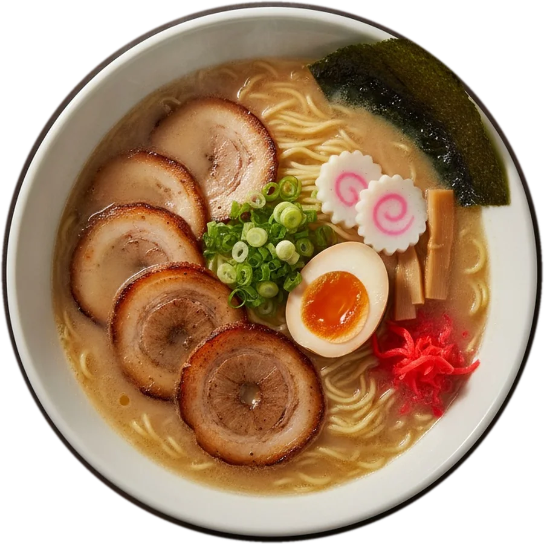
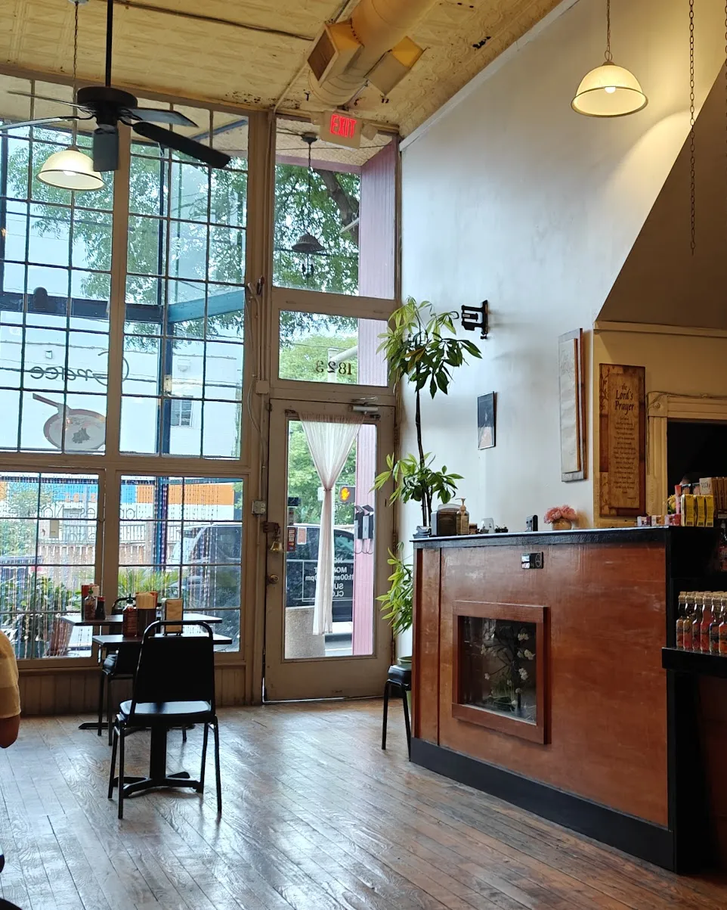
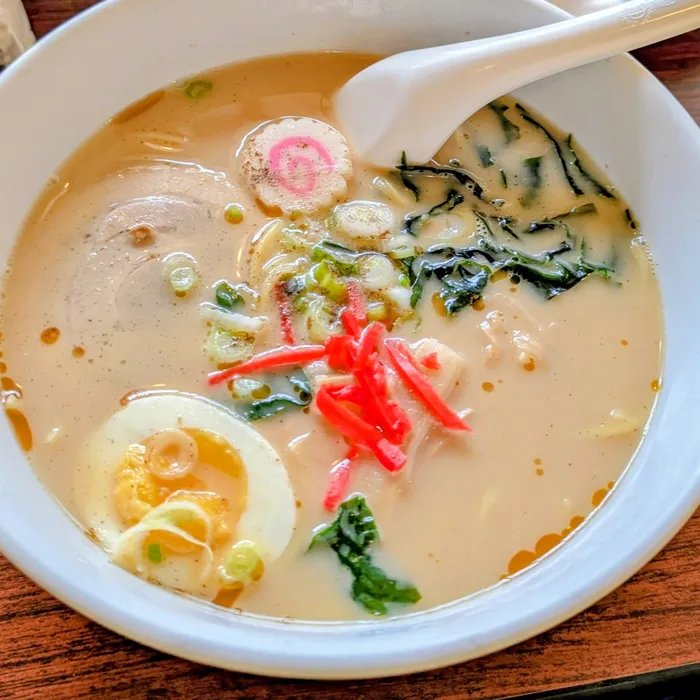
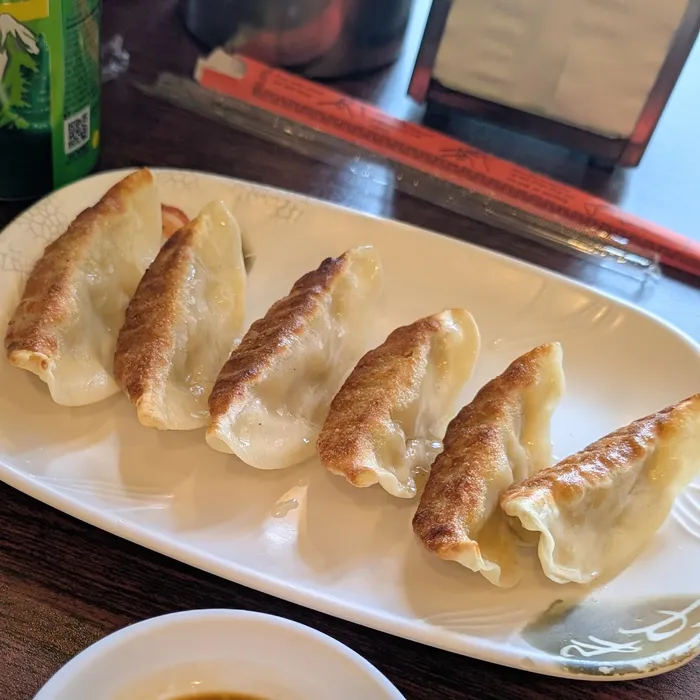
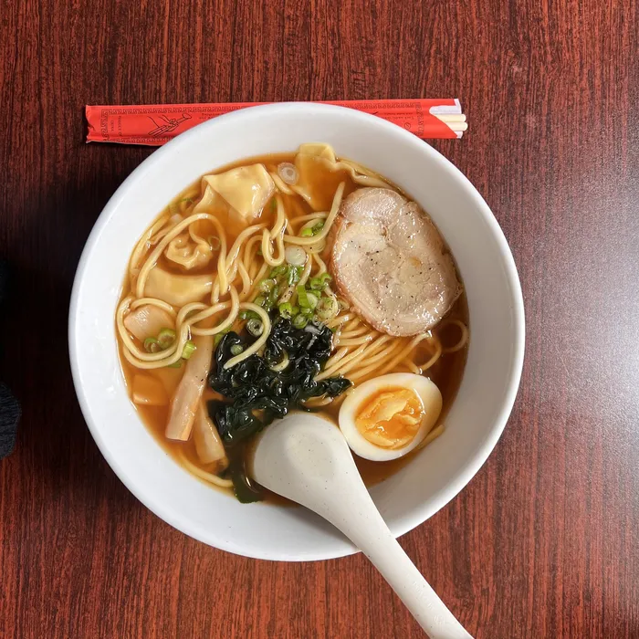
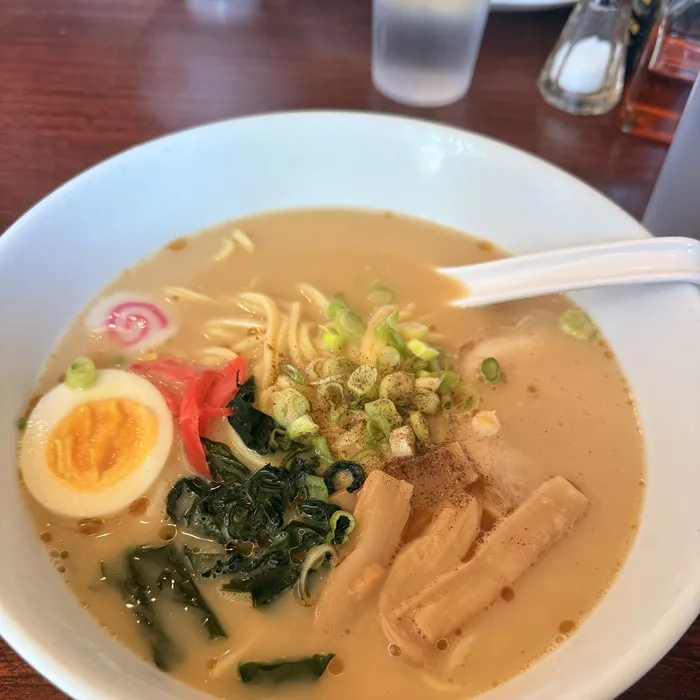

Grace Noodle, fresh homemade ramen in Shockoe Bottom, Richmond VA
No. 19 · Pork bone soup
Tonkotsu Ramen
豚骨ラーメンRoast pork, green onion, seaweed, half boiled egg, naruto, bamboo shoot and pickled ginger in pork bone soup.
Scroll for the next bowl. Hover a bowl to see what's in it.

Today's bowls
- Since 2014In Shockoe Bottom
- 4.6 From 364 Google reviews
- Made in houseFresh noodles, every day
- From $10.99A full bowl of ramen
Ten years in a noodle shop in Japan. Since 2014, on East Main.
Before Grace Noodle, chef Gaw Phaw spent ten years working in a noodle shop in Japan. In 2014 he and his wife Ma Lay opened their own on East Main Street in Shockoe Bottom, so Richmond could taste the real thing.
The noodles are still made fresh in house every day, and the owner still greets you at the counter. The name is a thank-you: Grace, for the help that carried them here.

Pick your broth.
New to ramen? Every bowl starts with the broth. Here is how they taste.
Shoyu
Soy sauce brothClear, savory and light. The classic Tokyo-style bowl with roast pork or chicken.
$11.99Shio
Salt brothThe cleanest, lightest broth on the menu. Lets the fresh noodles do the talking.
$11.99Miso
Fermented soybeanRich and a little sweet, loaded with cabbage, napa, carrot and bean sprouts.
$10.99Tonkotsu
Pork bone brothCreamy, cloudy and deep. Roast pork, half boiled egg, naruto and pickled ginger.
$11.50Tan Tan
Very spicyGround pork or chicken in a chili sesame broth. The bowl for heat seekers.
$11.50
Order online. Pick up on Main Street.
Pick your bowls
Add ramen from the showcase above or anything on the full menu.
Choose a time
Pick a pickup time during open hours, from 25 minutes out.
We call to confirm
Grace Noodle confirms by phone. Pay at the counter when you pick up.
Straight from the table.




Photos shared by diners on Google.
4.6 stars from 364 reviews.
The dumplings
The pan-grilled gyoza come up in review after review.
Rich tonkotsu
Diners call out the creamy pork bone broth and the fresh noodles.
Fast, warm service
Food comes out quickly, and the owner at the counter makes people feel at home.
Real value
Big, filling bowls at prices that are hard to beat downtown.
Themes summarized from public Google reviews.
Good to know
Can I order pickup online?
Yes. Add bowls from the showcase above or anything on the full menu, choose a pickup time and send the order. Grace Noodle calls you to confirm, and you pay at the counter when you pick up.
Are the noodles made in house?
Yes. Grace Noodle has made its noodles fresh in house since it opened in Shockoe Bottom in 2014.
What are your hours?
Monday to Saturday, 11 AM to 9 PM. Closed Sunday.
Where is Grace Noodle?
At 1823 E Main St in Richmond, VA 23223, in Shockoe Bottom, a short walk from the 17th Street Market.
Which ramen is spicy?
Tan Tan Ramen is the hottest bowl on the menu. Kimchi Ramen, Stamina Ramen and Spicy Shrimp Garlic Sauce Ramen also bring heat. Spicy dishes are marked with a chili on the menu.
Do you have vegetarian options?
Yasai Ramen and Yasai Cha Han are made with vegetables, and the Turkey Bacon Roll can be ordered vegan. Ask the counter about broths when you order.
Your bowl is one tap away.
Build your order online and pick it up at 1823 E Main St, or call the counter.